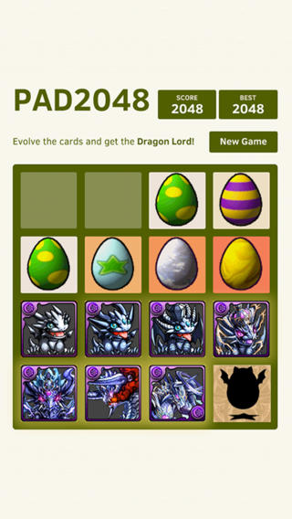

About Me
A coder, familiar with c/c++, javascript, c#, object c, java, python, php and etc. no swift, haha
A gamer, familiar with cocos2d-x/cocos2d-html5, Unreal and plays PC, console, and mobile games, no web games
A project manager, with successful MMO games experience.
A marketing guy, just have a try, not a big thing :)
Learning deep learning or machine learning or AI, try to use it in games
Project List
VRDemoHelper
A simpler tool to help VR demostration better and easier
https://github.com/sunzhuoshi/VRDemoHelper
Some Cookies
Flappy Dragon
A Puzzle and Dragons mod of Flappy Bird based on clumsy bird by ellisonleao
https://github.com/sunzhuoshi/clumsy-bird
PAD2048
A Puzzle and Dragons mod of 2048 based on 2048 by Gabriele Cirulli.
It is also available at App Store and google play.
